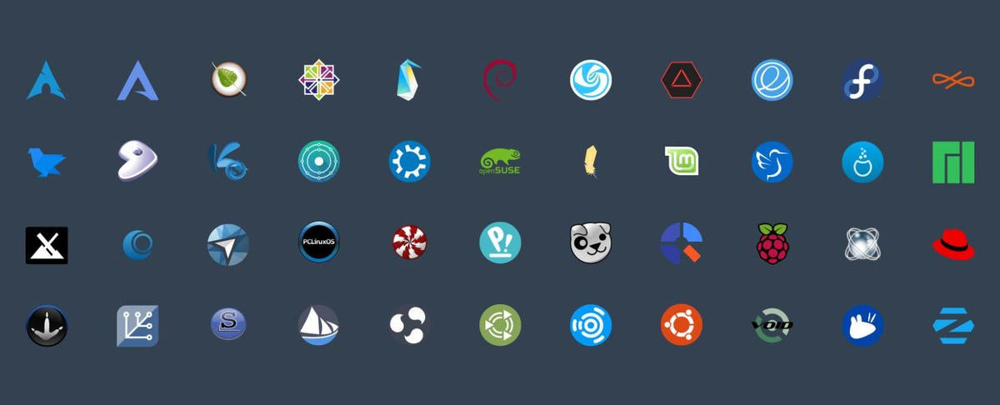

La Novena semana es la primera semana en la torre de Linux.

Linux
Linux es un kernel, el núcleo del sistema operativo creado por Linus Torvalds, GNU Linux es el Sistema operativo que utiliza como kernel a Linux. Existen demasiadas distribuciones basadas en Linux debido al open-source, debido a que los usuarios son capaces de crear sus propias distribuciones.
Linux viene del Sistema operativo Unix en 1970 y del Lenguaje C, debido a que Linus quería desarrollar un software que fuera libre para la comunidad. Minix fue el predecesor y el que monta las bases para el desarrollo de nuevos sistemas operativos open-source como Linux.
Linux es utilizado en todo tipo de aplicaciones, desde aplicaciones sencillas, hasta tareas criticas llevadas por la Nasa. Linux lleva una licencia GPL, lo cual es un software libre y de open-source. Debido a que gratis y open-source no es igual.
Existen muchas distribuciones o flavors de Linux, Debian, Red Hat, Arch Linux, son las más conocidas actualmente. Ubuntu es el sistema operativo más amigable hacia el usuario gracias a la interfaz gráfica que ofrece.
La diferencia entre las distribuciones en muchas ocasiones está caracterizada por las tareas que soluciona, Red hat es una solución para empresas montar servicios y servidores, por tanto es la preferida para suplir estas tareas.
Una de las principales diferencias es el administrador de paquetes, los archivos RPM son utilizados en Red hat y dpm utilizado en sistemas Debian. Los comandos entre distribuciones no varían mucho, los comandos esenciales son los mismos entre las distribuciones.
Proyectos basados en Linux

- Blender: Blender es un programa de animación utilizado para generar animaciones 3D con bastante realismo.Entre otras tareas
- Open Media Vault: Es una herramienta para crear un almacenamiento a nivel de casa, es una nube privada ubicada en la casa para poder acceder a archivos de manera rápida y eficiente.
- Pinephone pro: Es un teléfono con Linux diseñado para descubrir y cacharrear con este sistema operativo.
Conceptos basicos de Linux como S.O
Para poder utilizar de manera correcta Linux, hay que aventurarse desde la fundamentación del Sistema operativo, conocer los comandos básicos, los servicios, los requests processing, los procesos, como es la gestión de la memoria, multithreading, etc.
Linux es un sistema operativo multiusuario, debido a que permite a múltiples usuarios conectarse a un mismo sistema operativo en contraste con Windows, que solo permite un único usuario estar utilizando el sistema.
Los sistemas operativos Linux, son potencialmente más seguros que Windows debido a la cantidad de distribuciones que existen, sin embargo, ninguno es 100%, de igual forma un sistema operativo es seguro en la medida que el administrador del servidor lo sea.
Comandos basicos en la shell de Linux
- man: Utilizado para ver el manual
- ls: obtener la lista de archivos y folders
- cd: change directory
- pwd: present working directory
- cat: concatenate files
- ln -s file1 file2: Crea un vinculo simbolico
- echo: Permite mover información usualmente de texto a un archivo
- du: disk usage
- df: almacenamiento disponible en el disco de cada partición
- who: quien está en la linea de comandos
- mkdir: crea un directorio
- rmdir: remueve un directorio si está vacio
- cp: copia un archivo
- touch: crea o actualiza un archivo
- grep: utilizado para buscar un texto especifico en un archivo
- sort: utilizado para ordenar el contenido de un archivo
Security
Computer security or cybersecurity is the discipline that is responsible for guaranteeing the privacy and integrity of the information stored in information systems
It is made up of practices, measures and equipment that aim to protect servers, equipment, mobile devices and software programs from attacks or failures
Hackers vs Cyber-criminals
hackers are computer programmers who use their technical skills to solve problems on digital systems, networks, and devices.
Cyber-criminals: they has the same technical skills as hackers, but these bad actors engage in criminal activity, such as breaking into protected digital systems without permission.
Attacks
Existen distintos tipos de ataques que puede sufrir una computadora o servidor
- Virus
- Troyanos
- Gusanos
- Ransomware
- Spyware
- Pishing
- DDOS
- SQL Injection
- Zero Day
Protection
Asi como existen distintas formas de realizar un ataque, existen multiples maneras de evitar y estar seguros contra los ataques maliciosos
- Firewall
- Antivirus
- Encripcion
- Hardening
- Updates
- User Training
- Desarrollo con estandares de seguridad